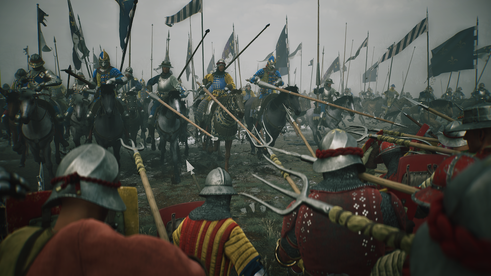

⚠️ DISCLAIMER: This is an UNOFFICIAL fan website for Chronicles: Medieval. This website is not affiliated with, endorsed by, or connected to the official developers or publishers of Chronicles: Medieval. All game-related content, images, and trademarks are the property of their respective owners.
Chronicles: Medieval
Command Armies, Shape Reputation, Follow the 2026 Medieval Sandbox
Planned for 2026 - Gameplay Reveal Now Live
2026 Development Watch
Experience Chronicles: Medieval - The Ultimate Medieval Strategy Game
Chronicles: Medieval is planned for 2026, with official Steam updates now focusing on gameplay reveal footage and battle-system deep dives. The latest developer diary highlights battle planning, standing orders, initial orders, formations, morale, commander combat, command mode, retreats, and culture-shaped army behavior. This fan site now tracks the evolving medieval sandbox as new official diaries and gameplay showcases arrive.
About Chronicles: Medieval
Chronicles: Medieval is a medieval strategy sandbox planned for 2026, with current official coverage centered on army command, battle setup, standing orders, morale, culture-shaped forces, and the political pressure behind war. This site treats the Steam page and developer diaries as the source of truth, then turns confirmed details into practical guides for commanders preparing to follow the Hundred Years' War campaign.
Story & Background
In Chronicles: Medieval, players take control of a medieval lord and engage in epic battles across diverse battlefields. The game features a rich narrative where different factions compete for control of valuable territories and strategic resources. Each battle in Chronicles: Medieval carries weight, as victories can shift the balance of power in this medieval universe. The world of Chronicles: Medieval is filled with political intrigue, military campaigns, and the constant struggle for dominance in a land torn by war and ambition.
Release Information
Chronicles: Medieval is currently listed on Steam with a 2026 planned release window. The confirmed Steam page is the best source for platform and timing updates. Recent official updates have emphasized the first gameplay reveal, Holy Roman Empire showcase, Lars Mikkelsen's role as Johannes Gutenberg, and a detailed look at battlefield systems.
For the concise timing summary, see the Chronicles: Medieval release date tracker.
For focused research, use the platform and status guide to check what is confirmed, then use the campaign-planning guide to turn official battle coverage into a preparation checklist without inventing unreleased systems.
Supported Languages
Language, subtitle, and interface availability should be checked against the live Steam language table and developer updates. Do not rely on an old language list when choosing a storefront, region, or accessibility option.
Prepare for Chronicles: Medieval With Confirmed Systems
Check What Is Confirmed
Start with the platform and status guide before making a purchase, hardware, release, or feature assumption. It keeps confirmed storefront and developer information separate from community expectations.
Turn a Battle Diary Into a Plan
Use deployment, standing orders, morale reads, commander positioning, terrain, and retreat choices as a planning framework only where official coverage supports those concepts. The campaign-planning guide turns that framework into a repeatable checklist.
Avoid Inventing Unreleased Details
Do not convert a trailer scene into a full map list, a unit roster, or a confirmed campaign system. Label future-guide ideas clearly, link the official source, and expand only when a developer diary or storefront description supports the new detail.
Build an Update Notebook
For each official update, record its date, source URL, feature scope, and the player question it answers. This produces better long-tail guides than a generic news rewrite and makes older pages easier to revise.
Chronicles: Medieval Game Gallery
Explore stunning visuals from Chronicles: Medieval, showcasing medieval battles, diverse battlefields, and the tactical atmosphere shown in recent gameplay updates. These screenshots capture the essence of what makes Chronicles: Medieval a promising medieval sandbox strategy experience.


